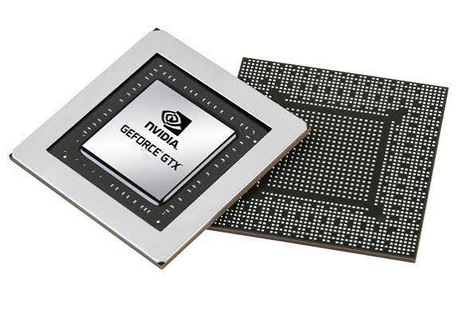
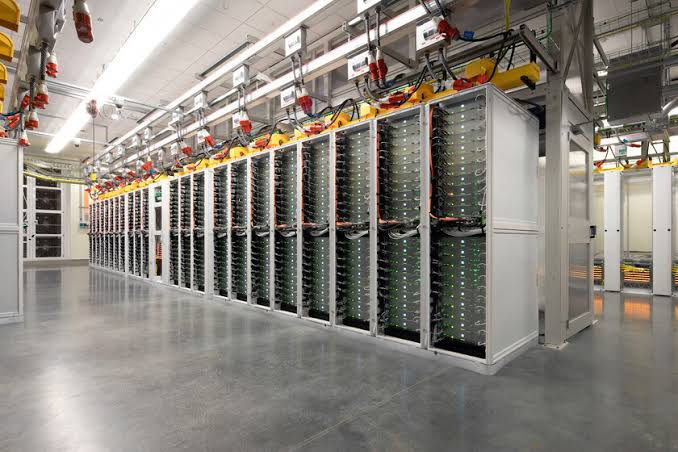
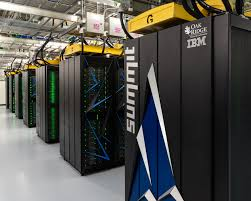
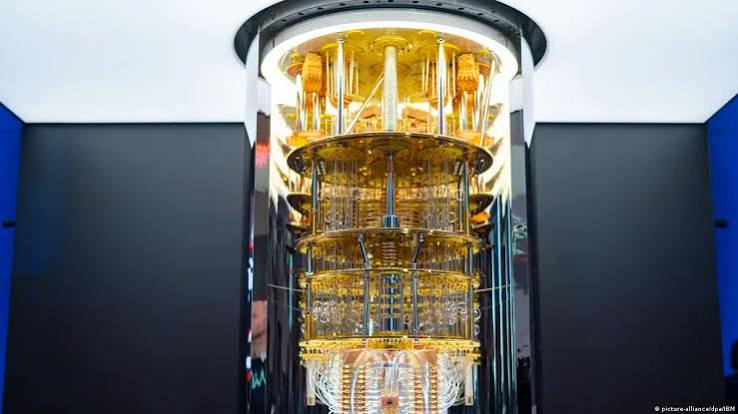
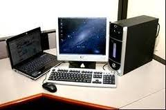

QUINTA GENERACION DE COMPUTADORAS (PRESENTE Y EL FUTURO DE LA COMPUTACION) - Analisis historico, cientifico y tecnologico exhaustivo sobre el procesamiento paralelo masivo, los chips multinucleo, la inteligencia artificial, el aprendizaje profundo, los aceleradores tensoriales (GPU, TPU, NPU), la computacion en la nube a escala de almacenes de datos, la supercomputacion exaescala y los fundamentos de la computacion cuantica.
1. Origen del Concepto: El Proyecto Japones FGCS - El concepto formal de quinta generacion nacio en octubre de 1981 en Tokio, cuando el Ministerio de Comercio Internacional e Industria de Japon (MITI) convoco una conferencia cientifica internacional y puso en marcha en 1982 el ambicioso Proyecto de Sistemas de Computadoras de Quinta Generacion (FGCS, Fifth Generation Computer Systems), dotado de una inversion estatal aproximada de 54.000 millones de yenes bajo la direccion de Kazuhiro Fuchi en el instituto ICOT. La meta cientifica japonesa era romper el paradigma secuencial de la arquitectura Von Neumann tradicional construyendo supercomputadoras con miles de procesadores en paralelo que no ejecutaran simples calculos numericos, sino maquinas de inferencia logica capaces de evaluar millones de inferencias logicas por segundo (LIPS) mediante el lenguaje de programacion logica PROLOG (lenguaje concurrentemente adaptado como KL1), con procesamiento de bases de conocimiento experto, comprension del lenguaje natural y reconocimiento de voz y vision en tiempo real. Aunque el proyecto concluyo formalmente en 1992 sin lograr que las maquinas de programacion logica reemplazaran a las computadoras personales de proposito general (las cuales avanzaron mucho mas rapido gracias a los procesadores RISC/CISC programados en C), el proyecto japones definio de manera indeleble los dos grandes ejes cientificos que gobiernan la quinta generacion moderna: el procesamiento masivo paralelo y el protagonismo universal de la Inteligencia Artificial.
2. El Fin del Escalamiento de Dennard y la Era Multinucleo - Durante mas de tres decadas, el aumento ininterrumpido de velocidad de los microprocesadores dependio de elevar la frecuencia de reloj mononucleo (desde los modestos 4,77 MHz del primer IBM PC en 1981 hasta rebasar los 3,4 GHz a principios de la decada de 2000). Sin embargo, hacia los anos 2004 y 2005 la industria de semiconductores choco contra una barrera fisica implacable conocida como el muro de potencia termica y el fin del escalamiento de Dennard. Descrito en 1974 por el cientifico Robert Dennard, el principio de escalamiento establecia que al encoger las dimensiones de los transistores y reducir sus voltajes de operacion, la densidad de potencia disipada se mantenia constante, permitiendo elevar la frecuencia sin sobrecalentar el chip. No obstante, al alcanzar los nodos de fabricacion de 90 y 65 nanometros, el espesor del aislante de dioxido de silicio de la compuerta se redujo a poco mas de un nanometro (unos escasos atomos de grosor), desatando fugas masivas de corriente parasita por efecto tunel cuantico: la potencia estatica igualo a la potencia dinamica y la temperatura por milimetro cuadrado alcanzo densidades termicas intolerables para cualquier ventilador convencional. Para sortear este colapso energetico, los arquitectos de hardware modificaron radicalmente la estrategia: abandonaron la carrera de gigahercios en un solo nucleo y comenzaron a integrar multiples nucleos de procesamiento independientes (dual-core, quad-core, octa-core y hasta 128 o mas nucleos fisicos por zocalo en arquitecturas de servidores como AMD EPYC e Intel Xeon Scalable) trabajando en paralelo a frecuencias moderadas y termicamente eficientes, compartiendo jerarquias de memorias cache ultrarrapidas (L1, L2 y L3) fabricadas directamente sobre la misma pastilla de silicio.

3. La Revolucion de las Unidades GPU, Aceleradores Tensoriales y Aprendizaje Profundo - El motor que desato la explosion de la Inteligencia Artificial contemporanea fue la reconversion de las Unidades de Procesamiento Grafico (GPU). Mientras una CPU tradicional dedica la mayor parte de su area de silicio a enormes memorias cache, predictores de saltos y logica compleja de ejecucion fuera de orden optimizada para reducir la latencia de un unico hilo secuencial, una GPU dedica mas del ochenta por ciento de su superficie a miles de unidades aritmetico-logicas (ALU) sencillas agrupadas en multiprocesadores de flujo (Streaming Multiprocessors), disenadas para ejecutar exactamente la misma operacion sobre millones de datos de forma paralela y simultanea (arquitecturas SIMD y SIMT). En noviembre de 2006, la compania NVIDIA lanzo la plataforma de programacion paralela CUDA (Compute Unified Device Architecture) bajo el liderazgo de Jensen Huang e Ian Buck, permitiendo a los cientificos utilizar las GPUs para computacion matematica general y, en particular, para el calculo masivo de multiplicaciones de matrices densas. Esta capacidad paralela desencadeno la revolucion del Aprendizaje Profundo (Deep Learning): en octubre de 2012, la red neuronal convolucional AlexNet (desarrollada por Alex Krizhevsky, Ilya Sutskever y Geoffrey Hinton en la Universidad de Toronto) gano el concurso internacional ImageNet reduciendo el error de clasificacion casi a la mitad al entrenarse durante seis dias en dos GPUs convencionales NVIDIA GeForce GTX 580, demostrando que las redes neuronales profundas superaban a cualquier metodo tradicional de vision artificial. En junio de 2017, investigadores de Google publicaron el celebre articulo Attention Is All You Need, introduciendo la arquitectura Transformer basada en mecanismos de atencion y autoatencion pura sin capas recurrentes, permitiendo paralelizar masivamente el entrenamiento sobre miles de procesadores y abriendo el camino para los Modelos de Lenguaje Masivos (LLM) contemporaneos (como GPT, Gemini y Claude). La industria desarrollo ademas circuitos integrados especificos para acelerar operaciones tensoriales en formatos numericos de precision mixta y reducida (FP16, BF16, INT8, FP8 y micro-escalado FP4), tales como las Unidades de Procesamiento Tensorial (TPU) de Google basadas en arreglos sistolicos de multiplicacion-acumulacion, los nucleos Tensor Core de NVIDIA y las Unidades de Procesamiento Neuronal (NPU) integradas en procesadores moviles de uso masivo.

4. Computacion en la Nube y Arquitecturas a Escala de Almacen (Warehouse-Scale Computing) - Durante la quinta generacion, el computador dejo de considerarse un dispositivo individual aislado para redefinirse como una superestructura global distribuida mediante la Computacion en la Nube (Cloud Computing). Como conceptualizaron los ingenieros Luiz Andre Barroso y Urs Holzle, centros de datos monumentales con superficies equivalentes a estadios de futbol operan como gigantescos computadores a escala de almacen (Warehouse-Scale Computers): decenas de miles de servidores de alta densidad se comunican a traves de redes de fibra optica con enlaces de 400 y 800 Gbps utilizando protocolos de comunicacion de ultra baja latencia como InfiniBand y RoCE (RDMA over Converged Ethernet), permitiendo a los procesadores acceder directamente a la memoria de otros servidores sin intermediacion del sistema operativo. Tecnologias de virtualizacion mediante hipervisores y aislamiento liviano por contenedores (como Docker y Kubernetes) permiten distribuir cargas de trabajo y ejecutar aplicaciones de macrodatos (Big Data) e inteligencia artificial para miles de millones de usuarios en milisegundos. Para sortear el cuello de botella de transferencia entre el procesador y la memoria (el muro de la memoria), la industria adopto la memoria de alto ancho de banda (HBM, HBM3 y HBM3e): esta tecnologia apila verticalmente pastillas de memoria DRAM unidas mediante miles de microcanales conductores que atraviesan microscopicamente el silicio (vias a traves de silicio o TSV), montadas directamente al lado de la CPU o GPU sobre un intercalador de silicio pasivo (interposer) utilizando empaquetado tridimensional avanzado como CoWoS (Chip-on-Wafer-on-Substrate) de TSMC o Foveros de Intel, alcanzando anchos de banda superiores a los varios terabytes por segundo.

5. La Conquista del Exaflop y la Supercomputacion Moderna - En el plano del calculo cientifico de frontera, la quinta generacion inauguro la era de la supercomputacion a escala exaflop: una maquina de un exaflop es capaz de realizar formalmente mas de un trillon internacional (10 elevado a la 18) de operaciones matematicas en coma flotante por segundo. En mayo de 2022, la supercomputadora Frontier, construida por HPE Cray en el Laboratorio Nacional de Oak Ridge (Tennessee, EE.UU.) para el Departamento de Energia estadounidense, se corono formalmente como la primera maquina del mundo en superar la barrera exaescala al registrar un rendimiento certificado de 1,194 exaflops (con picos teoricos superiores a 1,6 exaflops): Frontier combina 9.408 procesadores AMD EPYC de 64 nucleos con 37.888 aceleradores graficos AMD Instinct MI250X interconectados a traves de 74 gabinetes refrigerados por agua destilada en circuito cerrado, consumiendo 21 megavatios de potencia electrica. Esta supercomputadora, acompanada posteriormente por colosos como Aurora en el Laboratorio Nacional de Argonne y El Capitan en el Laboratorio Nacional Lawrence Livermore, ejecuta modelos de simulacion climatica global con resoluciones de kilometros, simulaciones hidrodinamicas de plasma para confinamiento magnetico en reactores de fusion nuclear limpia, analisis del plegamiento tridimensional de proteinas para diseno farmacologico y simulaciones cosmologicas de la evolucion del universo a partir de las leyes de la fisica cuantica.

6. La Frontera Cuantica: Principios y Procesamiento por Cubits - La ruptura mas profunda de la quinta generacion respecto a toda la historia previa es la Computacion Cuantica. Todas las computadoras construidas desde el abaco y el ENIAC hasta los procesadores multinucleo mas avanzados son maquinas clasicas que procesan bits binarios estrictamente definidos como 0 o 1. Por el contrario, un computador cuantico emplea el bit cuantico o cubit (qubit), sustentandose en dos principios fundamentales de la mecanica cuantica enunciados por la fisica teorica: en primer lugar, la superposicion cuantica, donde un cubit se describe matematicamente como una combinacion lineal de los estados fundamentales cero y uno con amplitudes de probabilidad complejas, lo que permite que un registro de N cubits en estado de superposicion coherente pueda codificar y procesar simultaneamente dos elevado a la N combinaciones numericas (un sistema de solo cincuenta cubits puede representar mas de mil billones de estados a la vez); en segundo lugar, el entrelazamiento cuantico (Quantum Entanglement), propiedad en la que multiples cubits quedan entrelazados de tal forma que el estado cuantico de uno determina de forma instantanea e inseparable el estado del conjunto completo, independientemente de la distancia fisica. En la practica experimental, la construccion fisica de cubits se realiza mediante diversas tecnologias de vanguardia: circuitos superconductores de tipo transmon basados en uniones Josephson (como en los procesadores IBM Quantum Eagle y Heron, o Google Sycamore), los cuales requieren operar en condiciones termicas extremas de 15 milikelvin (apenas una centesima de grado por encima del cero absoluto, mas frio que el vacio interestelar) suspendidos dentro de criostatos de dilucion de helio de multiples etapas doradas para evitar la decoherencia termica; iones atrapados en trampas electromagneticas de ultra alto vacio manipulados con pulsos laser de alta precision; y cubits fotonicos lineales de luz. Algoritmos cuanticos como el algoritmo de Peter Shor (1994) demostraron que un computador cuantico tolerante a fallos con correccion de errores de superficie podria factorizar numeros enteros gigantescos en tiempo polinomial (amenazando la seguridad criptografica de los algoritmos RSA y de curvas elipticas que protegen las comunicaciones y las transacciones bancarias del mundo actual), mientras que el algoritmo de Lov Grover (1996) ofrece una aceleracion cuadratica en la busqueda de informacion en bases de datos no estructuradas, abriendo el camino para simular moleculas complejas, reacciones quimicas cataliticas y nuevos materiales superconductores a temperatura ambiente.
7. Nanotecnologia Extrema, Litografia EUV y Transistores GAAFET - En la base material de la microelectronica, la manufactura fisica alcanzo la escala atomica gracias a avances extremos de la ingenieria: la tecnologia de litografia ultravioleta extrema (EUV), desarrollada y monopolizada industrialmente por la empresa neerlandesa ASML, utiliza luz ultravioleta con una longitud de onda de apenas 13,5 nanometros generada al pulverizar cincuenta mil gotas microscopicas de estano fundido por segundo y dispararles con pulsos laser de dioxido de carbono de alta potencia, proyectando patrones de circuitos de apenas unos pocos atomos de ancho mediante espejos concavos multicapa de molibdeno y silicio fabricados por Zeiss. Asimismo, la arquitectura fisica de los transistores evoluciono desde las estructuras planas bidimensionales hacia aletas tridimensionales FinFET (introducidas por Intel en 2011 a 22 nanometros) y, en la actualidad, hacia transistores de nanocintas de compuerta completa (GAAFET, Gate-All-Around / Nanosheets, conocidos como RibbonFET por Intel y MBCFET por Samsung), donde delgadas laminas horizontales de silicio quedan completamente rodeadas por el material metalico de la compuerta por sus cuatro caras, impidiendo el escape de electrones por efecto tunel cuantico en nodos litograficos de 3 y 2 nanometros. Finalmente, los procesadores comerciales consolidaron el modelo de Sistemas en Chip (SoC) y empaquetado heterogeneo de chiplets, integrando en una pastilla unificada los nucleos de CPU (con arquitecturas de conjunto de instrucciones x86, ARM o la creciente arquitectura abierta RISC-V), potentes GPUs graficas, coprocesadores de seguridad criptografica, motores neuronales NPU y modems de comunicaciones de alta velocidad, sentando la infraestructura fisica indispensable para la era de la inteligencia ubicua y la automatizacion global.

Jesus Adriel Meza Machado 5DPGM